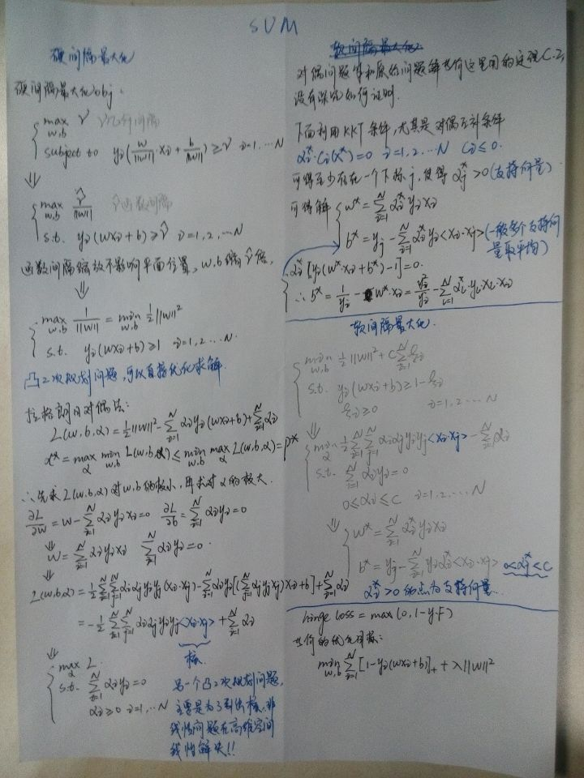

纸上得来终觉浅，光看明白还是不够的，常用算法还是要亲自推导下印象才深刻。请忽略我丑陋的字迹，好久没写过字了-_-!
Logistic Regression and Softmax Regression
SVM

Bernoulli and Multinomial Naive Bayes
BP神经网络
Expectation-Maximization and Gaussian Mixture Models
Hidden Markov Model

Latent Dirichlet Allocation
详见Topic Model-LDA理论篇
GBRT
详见GBM之GBRT总结
To be continued…